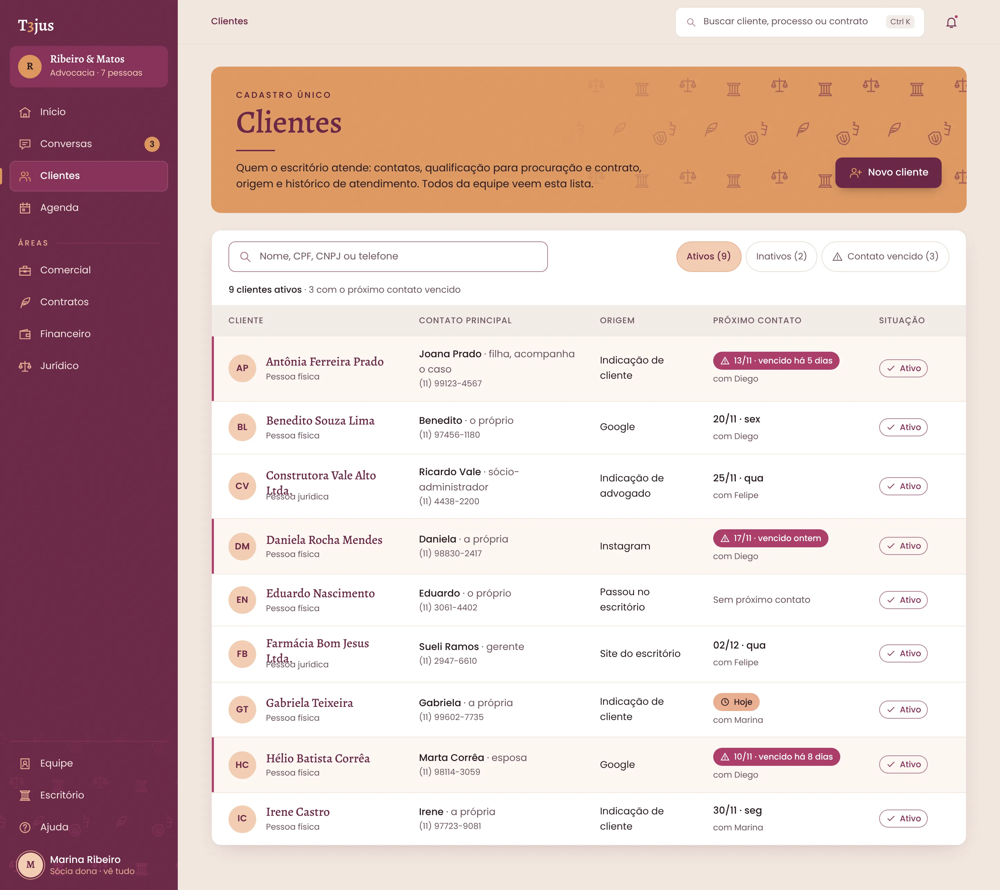

Lista (sócia dona)
Busca por nome, CPF, CNPJ ou telefone e três filtros: Ativos, Inativos e Contato vencido. Cada linha: nome e tipo, contato principal com papel e telefone, origem, próximo contato e situação. A linha com contato vencido tem filete e selo de urgência com quantos dias.
Abrir: clientes.html?estado=lista (estreite a janela para ver o celular)